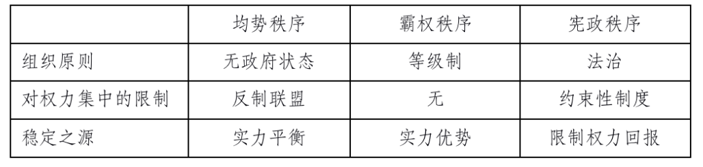

收录于合集
以下文章来源于同济战略派 ，作者约翰·伊肯伯里
 同济战略派 .
同济战略派 .
同济大学中国战略研究院

约翰·伊肯伯里：均势秩序和霸权秩序
作者： 约翰·伊肯伯里（G. John Ikenberry），生于1954年10月5日，现为普林斯顿大学政治系、伍德罗·威尔逊学院艾尔波特·米尔班克讲座教授（Albert G. Milbank Professor of Politics and International Affairs）。伊肯伯里在美国战略理论界、政策分析界、政府具有广泛的影响，是美国战略研究界中青年一代的领军人物，被公认为继保罗·肯尼迪、约翰·加迪斯（John Gaddis）之后美国最富盛誉的战略学者。他以经历丰富、精力丰沛、成果丰硕著称于战略研究界。
** 译者：** 门洪华，同济大学政治与国际关系学院院长、教授、博导。 ****
来源： 选自《大战胜利之后》，北京大学出版社2008年版；同济战略派。
就国家间政治秩序而言，最为重要的三种类型是围绕势力均衡、霸权和宪政主义组织起来的。 每一种秩序都代表着国家间权力分配和权力行使的不同方式，并在实力和权威的基本组织关系上存在差异。它们在对国家权力行使的限制、各国达成一致与进行合作的渊源等方面也存在不同。当然，在导致国际秩序稳定与否的基本条件方面，它们也是迥异的。
基于均势、霸权和宪政主义的秩序只是理想模式。现实中的历史秩序往往体现出多种秩序的特征。 均势秩序或霸权秩序众所周知且理论化程度颇高，新现实主义国际关系理论往往对此极为关注。宪政秩序——至少如其在国家间关系中所展示的——需要进一步阐述。关于对这些秩序基本特征的概括，请参看下表2-1。
表2-1：国际秩序的类型

均势秩序是围绕无政府原则组织起来的，其中没有支配性的政治权威。 肯尼思·华尔兹（Kenneth Waltz）认为，这是国际体系的本质特征。体系的“各个部分”是由基本特征类似（“如同单元”）、基本功能无差异的国家组成。在无政府状态之下，各国之间并不存在固定的、正式的或等级关系。 政治权威的核心术语是国家主权，后者明确排斥和反对等级制。
在一个无政府状态的世界里，各国有着制衡的动机。安全——实质上是生存——是国家的基本目标，因为各国不能最终依赖其他国家确保其安全的承诺或保证，各国对自己的相对实力地位分外敏感。 强国横刀立威之际，二等国家将通过组织弱国之间的反制联盟来寻求保护。这种选择的目的是对抗被主导的危险。正如华尔兹指出的，“如果二等国家可以自行选择，它们必然会集聚在弱国一方；原因是强大的一方威胁着它们。设若它们所加入的联盟拥有足够的防御和威慑力量来防止敌手发动攻击，则它们在弱国一方不仅受到更大的重视，而且更为安全。”联盟就成为国家联合抵制实力汇聚的临时结盟。设若权力分配发生变化，结盟也会随之变化。 秩序则建立在各国制衡行动的基础上，这是各国在无政府体系之中寻求安全保护必要的、不可避免的结果。
华尔兹将“制衡”与“追随”（Bandwagoning）进行了比较，他认为后者是国内政治体系中竞争者常常采用的一种典型战略。例如，当有实力的领导者竞争政党领袖地位之时，他们常常组织联盟，以防其他竞争者胜出。 处于无政府状态之下的各国亦如此。一旦某领导者最终当选，失败者则倾向于搭便车，即支持获胜的领导者。 “只要其中一个人极有可能成为胜利者，几乎所有其他人都会选择搭便车，而不是继续建立联盟以防止他者摘取胜利果实。” 失利的候选人愿意转而支持获胜者。“在领导者地位的竞争中，搭便车是一个明智的行为，失败者也可能因此获益，而且失败不会使它们的安全置于危险境地。”华尔兹认为，国内秩序和国际秩序的比较至关重要，是新现实主义的核心出发点，国内秩序和国际秩序是根本不同的两种类型： 在国内政治中，胜败的利害关系不大，即使与获胜的新领导者合作，也存在获益的可能性。
在国际政治中采取搭便车行为，意味着允许出现一个“世界霸权”，会导致弱国受强国摆布。 在无政府状态下，牵制另一个国家实力上升的惟一有效途径是，与其他弱国联合起来抵御支配。无政府状态下永恒不变的制衡逻辑造就了国际秩序。其他逻辑是没有意义的，因为这一逻辑利害攸关，而其他逻辑是不可持久的。
霸权秩序也建立在各国权力分配的基础上，但却是按照极其不同的逻辑运行的：实力和权威关系是由等级制的组织原则来确定的。 在一个等级制的国际秩序之中，各国按照地位高下垂直排列，构成一体。政治权威是集权的，尽管各单位之间存在诸多相互依赖和职能分工。华尔兹认为，我们主要从国内政治秩序的结构中看到这一权威原则，而国内政治是“集权的、等级制的”。在这一情势之下，“国内政治体系的部分内容为优势国家和劣势国家间关系所汲取。某些国家被赋予领导权，其他国家则被要求服从。”
但是，建立和维系等级制度还有其他方式。 设若通过法治、通过协商一致达成正式制度程序来建立等级式的实力关系和政治权威（例如通过代议制政府选举统治者），我们最好视之为宪政政治秩序。政治和法律制度赋予某些具体的公职机构以权威，官员们通过这些机构执行规则，只有在这个意义上，宪政秩序才是等级式的。相比而言，霸权秩序的明显特征是，等级制是通过强制运用权力来建立和维系的。 显然，造就等级规则的权力能力有着本质差别。
帝国可能是国际关系中等级秩序的极端形式。在帝国秩序中，各单位并无完全主权，帝国最终通过强制性主导来实现控制。 在实际运行中，帝国秩序因其等级式主导和控制程度不同而迥然有异。霸权秩序也是等级制的，其中弱国和二等国家正式拥有主权，而主导程度、主导机制则可能更为松散、更少正式色彩。 但是，霸权制度最终是通过领导国的实力优势建立和维持的，当其实力衰落或转到其他国家之时，这一秩序必然会被打破或陷入衰败。
罗伯特·吉尔平（Robert Gilpin）在其关于战争与变革的模式分析中，论述了霸权秩序的逻辑。 国际政治是领导国强加给世界的秩序的承继。 吉尔平指出，“秩序演变的特征是，控制体系的强大国家相继崛起决定了国际互动关系和建立体系规则的模式”。国家间权力分配出现逐步变化势在不免，必然导致新的挑战国出现，并最终与领导国进行霸权战争，从而导致新的霸权国出现，并利用其主导地位建立符合其利益的秩序。 霸权国的权力能力确保了规则、权利的确立与维系。而霸权所拥有的权力能力——包括军事实力、金融资本、市场占有率、技术等——最终确保了其他国家遵从、参与该秩序。 直接强制常常是加强秩序的一个选择，但不那么具有强制性的“胡萝卜加大棒”（Carrots and Sticks）也常常是维持霸权控制的机制。吉尔平还指出，更大范围的资源——意识形态和等级威望——也成为确保霸权秩序永恒存在的有机组成部分。 但是，霸权国的权威和霸权秩序的凝聚力，最终建立在领导国巨大的实力优势基础上，当其实力衰落之时，霸权秩序也会陷入崩裂。
强大的霸权秩序建立在霸权国对弱国和二等国家直接、强制性的主导之下。但是，霸权秩序也可能是仁慈的、较少强制性的，它可以围绕互惠的、达成共识的和制度化的关系组织起来。 这一秩序依旧是围绕不平衡的实力关系组织起来的，但主导的恶性特征有所缓和。当霸权拥有更多的仁慈特征，并对其权力运用确实施加约束，则秩序开始向宪政主义方向发展。与此同时，霸权特征的以上不同，导致霸权秩序中的弱国和二等国家并未试图制衡领导国。在一个高压性的霸权秩序中，弱国和二等国家是没有能力进行制衡的。主导本身也防止秩序滑向均势体系。 在更为仁慈和注重达成共识的霸权秩序中，对霸权的限制得到了充分的发展；另一方面，制衡的预期价值也降低了，追求制衡的动机也减少了。在仁慈霸权的情境下，秩序开始体现出某种“弱”宪政主义的特征。
均势秩序和霸权秩序均是国际权力分配的产物。 制衡秩序反映了对主要权力分配的可预期的、定式的反应；其动力来源于各国必须维持其地位、防止被不受制约的霸权国所主导的根本利益。设若权力分配发生变化，制衡联盟也随之变化。霸权秩序因权力集中而建立、维系，但对弱国和二等国家进行直接强制和操控的程度有所不同。霸权国的意识形态目标和威望也与它建立稳定秩序的能力相关。均势秩序建立在对权力集中的制约和反制基础之上，而霸权秩序实际上建立在不受约束的实力基础之上。 这两种秩序均与宪政秩序形成鲜明对照，在宪政秩序中，对权力的制约更为确定并有所发展，根植于相对难以驾驭的制度框架中。
排版 | 朱诗卉
文章来源于“同济战略派”，文章观点不代表本平台观点。